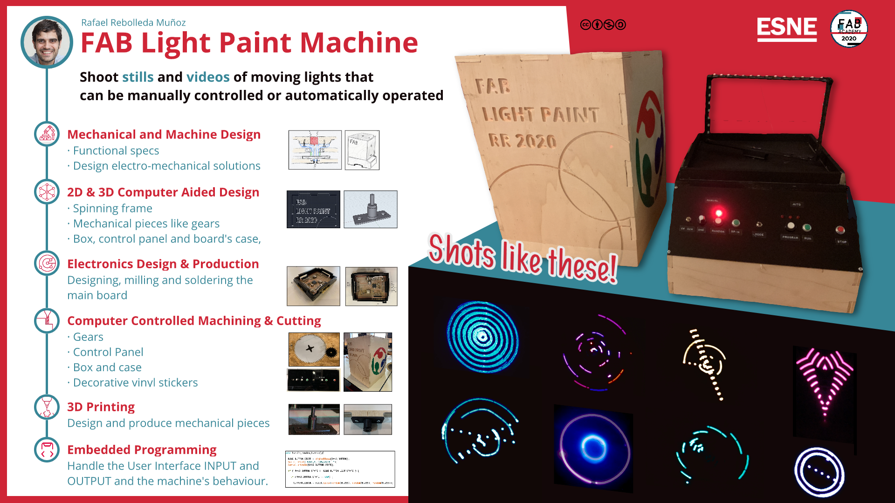

<!DOCTYPE html>
<html lang="en"></html>
<head>
  <meta charset="utf-8">
  <meta content="IE=edge" http-equiv="X-UA-Compatible">
  <meta content="width=device-width, initial-scale=1" name="viewport">
  <title> Rafael Rebolleda — Fab Academy 2020 Documentation</title>
  <!-- Google Fonts-->
  <link rel="stylesheet" href="https://fonts.googleapis.com/css?family=Catamaran&amp;display=swap">
  <link rel="stylesheet" href="../css/main.css">
</head>
<body> 
  <nav>
    <header>
      <ul>
        <li>Rafael Rebolleda</li>
        <li>ESNE (+ LEON)</li>
        <li>Madrid, Spain</li>
      </ul>
      <p class="bio">CX consultant and professor. Single, semi-remote Fab Acadeny student.</p>
    </header>
    <ol>
      <li><a class="red" href="../">About me</a></li>
      <li><a class="blue" href="../FP/">Final Project</a></li>
      <li><a class="blue" href="../DEV/">Project Development</a></li>
    </ol>
    <h1>Assignments</h1>
    <ol> 
      <li><a href="../W1/">Principles & Practices</a></li>
      <li><a href="../W2/">Computer Aided Design</a></li>
      <li><a href="../W3/">Computer Controlled Cutting</a></li>
      <li><a href="../W4/">Electronics Production</a></li>
      <li><a href="../W5/">3D Scan + Printing</a></li>
      <li><a href="../W6/">Electronics Design</a></li>
      <li><a href="../W7/">Computer Controlled Machining</a></li>
      <li><a href="../W8/">Embedded Programming</a></li>
      <li><a href="../W9/">Input Devices      </a></li>
      <li><a href="../W10/">Applications & Implications</a></li>
      <li><a href="../W11/">Output Devices</a></li>
      <li><a href="../W12/">Interface Programming</a></li>
      <li><a href="../W13/">Intellectual Property</a></li>
      <li><a href="../W14/">Networking</a></li>
      <li><a href="../W15/">Molding & Casting</a></li>
      <li><a href="../W16/">Wildcard: Waterjet CCC</a></li>
      <li><a href="../W17/">Mechanical & Machine Design</a></li>
    </ol>
  </nav>
  <main>
    <h1>Final Project</h1>
    <h2>Summary Slide</h2>
    <p>Source file: <a href="http://fabacademy.org/2020/labs/esne/students/rafael-rebolleda/presentation.png">presentation.png</a></p>
    <h2>Summary Video</h2>
    <video src="../presentation.mp4" poster="poster.jpg" controls></video>
    <!-- <iframe src="https://player.vimeo.com/video/446303444" width="640" height="480" frameborder="0" allow="autoplay; fullscreen" allowfullscreen></iframe>-->
    <p>Source file:  <a href="http://fabacademy.org/2020/labs/esne/students/rafael-rebolleda/presentation.mp4">presentation.mp4</a></p>
    <h2>What does it do?</h2>
    <p>The Fab Light Paint is a machine that performs manual and automated light movements in a completely portable dark environment, suitable for long exposure photography through a small hole on the top. It also works great for videos and even small animations.</p>
    <h2>Who’s done what beforehand?</h2>
    <p>I've seen there have been some other projects around light painting in Fab Academy. For example <a href="http://archive.fabacademy.org/archives/2017/fablabhornafjordur/students/201/week11.html">this one</a> made during Fab Academy 2017 by Ana Cabral, Ola Mirecka and Birkir Thor:</p><iframe src="https://player.vimeo.com/video/213813915" width="640" height="360" frameborder="0" allow="autoplay; fullscreen" allowfullscreen></iframe>
    <p>Or <a href="http://fab.cba.mit.edu/classes/863.17/Harvard/machines/index.html">this one</a>, which is somewhat similar:</p>
    <video src="http://fab.cba.mit.edu/classes/863.17/Harvard/machines/photos/programming/14.mp4" loop autoplay muted></video>
    <p>Still, even if they are based on similar principles, the outcomes and very different.</p>
    <h2>What did you design?</h2>
    <p>I designed the board and its case, the box and the cover, the spinning frame, the gears and the user interface.</p>
    <h2>What materials and components were used?</h2>
    <h3>The Control Panel</h3>
    <ul>
      <li>Black 3 mm plexiglas</li>
      <li>Two SPST switches</li>
      <li>Five normally closed push buttons </li>
      <li>One 10K potentiometer</li>
      <li>One WS2812B RGB Programmable LED</li>
      <li>Three red LEDs</li>
      <li>Eight 10K Ω resistors</li>
      <li>Three 220 Ω resistors</li>
      <li>Solid core wire in different colors</li>
      <li>Four 3x10 mm screws</li>
    </ul>
    <h3>The Spinning Frame</h3>
    <ul>
      <li>WS2812B RGB Programmable LED strip</li>
      <li>Black 3 mm plexiglass for the gears</li>
      <li>SM-S4306R Servo motor</li>
      <li>Two Ball-bearings</li>
      <li>Slip ring</li>
      <li>PLA for the 3D printed mechanical adapter</li>
      <li>20 mm plywood</li>
    </ul>
    <h3>The board</h3>
    <p>(All surface mount components)</p>
    <ul> 
      <li>Copper raw board</li>
      <li>ATMEGA 328P—AU</li>
      <li>One 8 MHz resonator</li>
      <li>Two 6 mm push buttons</li>
      <li>Two green LEDs</li>
      <li>One 1uf Cap</li>
      <li>Two .1uf Caps</li>
      <li>One 10uf Cap</li>
      <li>Two 10K Ω resistors </li>
      <li>Two 499 Ω resistors</li>
      <li>29 header pins (I mounted two additional "blind" ones to increase structural strength)</li>
      <li>3 mm black plexiglas for the case</li>
    </ul>
    <h3>The box</h3>
    <ul> 
      <li>10 mm Plywood</li>
      <li>Red, Green and Blue sticky vinyl</li>
      <li>Matte Black spray paint</li>
      <li>White glue</li>
    </ul>
    <h2>Where did they come from?</h2>
    <ul>
      <li>Digikey</li>
      <li>Amazon</li>
      <li>Local hardware stores: AKI, Leroy Merlin, Bricodepot</li>
    </ul>
    <h2>What parts and systems were made?</h2>
    <ul>
      <li>The box</li>
      <li>The control panel</li>
      <li>The motor + gear system</li>
      <li>The light system</li>
      <li>The electronic board and connections</li>
    </ul>
    <h2>What processes were used?</h2>
    <ul>
      <li><strong>2D & 3D Computer Aided Design</strong> with Eagle, Fusion360, AutoCAD & Shapr 3D.</li>
      <li><strong>Additive manufacturing</strong> for mechanical pieces</li>
      <li><strong>Substractive manufacturing</strong> for the wood panels, spinning grame and board milling.</li>
      <li><strong>Computer Controlled Cutting</strong> for the gears, board case and vinyl stickers</li>
      <li><strong>Embedded Programming</strong> with Arduino IDE</li>
    </ul>
    <h2>What questions were answered?</h2>
    <p>An interesting one was whether the gear multiplication ratio would be enough given the servo rotating speed, and 3:1 worked fine. I also found out about the versatility of slip rings.</p>
    <p>Photography wise, the useful focal length to the lights, the size of the hole and balance between useful brightness and not contaminating the environment were all parameters to tweak for optimal results. </p>
    <h2>What worked? What didn’t?</h2>
    <p>Making the box and the gears were probably the most straightforward steps in the whole project.</p>
    <p>The "LP-record" idea to communicate the frame with the board was simple and effective in theory, but in practice there was more "wobblyness" than anticipated, so it didn't work as reliably as expected. I think it can probably be refined with different approaches to work alright, but because of the COVID pandemic and limited Fab Lab access a decision was made to move in a different direction.</p>
    <p>Soldering the board proved to be trickier in a different way than expected. For example, I though the ATMEGA would be the most difficult component to solder, and it ended up being the easiest. The resonator took the doubtful privilege of being the hardest. I also had to rebuild a couple of tracks, which was a good learning to salvage an otherwise functioning board.</p>
    <p>Finally, the original motor wasn't powerful enough, so I swapped it for the servo. At the beginning I was reluctant because I thought speed control was a key part of the machine, but after some thoughts and experiments, it turned out to be somewhat irrelevant. In hindsight, I should've gone with the servo from the get go.</p>
    <h2>How was it evaluated?</h2>
    <p>With spiral development in mind, I had two parallel tracks of evaluation: technical feasibily and functional experience for photographers.</p>
    <p>Eventhough I consider myself a savvy enough photographer, I looped in a couple of photographer friends to bounce ideas from the final product and outcome perspective.</p>
    <p>With these in mind, I would then try to validate technical feasibility:</p>
    <ul> 
      <li>Do I have access to all the components and tools that I need?</li>
      <li>Can I connect them and control them in a way that suits the project's needs, as a proof of concept?</li>
      <li>Do I have different paths to move forward with the main challenges, so as not to be blocked?</li>
    </ul>
    <h2>What are the implications?</h2>
    <p>The main purpose for the device is to serve hobby-photographers, and to help them experiment in a controlled, portable dark environment, which is difficult to have at hand when most of us leave in small appartments.</p>
    <p>Still, I've already had petitions from pro photographers and motion designers to use it in their projects, to create backdrops and other interesting light effects to complement their projects.</p>
    <p>Another completely different angle is its use as a toy for kids. It's very engaing because it's easy for kids to grasp how it works and fun to operate, it also serves as a tool to discuss interesting topics like physics, photography, programming, and well... making stuff!</p>
    <h2>Files</h2>
    <ul>
      <li><a href="../W6/hello_fabkit.zip">Hello Fab Kit Eagle Project</a></li>
      <li><a href="hello_fabkit_case.dxf">Hello Fab Kit Case</a></li>
      <li><a href="../W7/box.dxf">Machine Wood Box</a></li>
      <li><a href="spinning_frame.dxf">Spinning Frame</a></li>
      <li><a href="fixture.stl">Frame/Bearing/Gear Fixture</a></li>
      <li><a href="gears.dxf">Gears</a></li>
      <li><a href="control_panel.dxf">Control Panel</a></li>
      <li><a href="Control_Panel.zip">Arduino Project</a></li>
    </ul>
  </main>
  <footer>
    <hr>
    <p><a rel="license" href="http://creativecommons.org/licenses/by-nc/4.0/"></a><br />This work is licensed under a <a rel="license" href="http://creativecommons.org/licenses/by-nc/4.0/">Creative Commons Attribution-NonCommercial 4.0 International License</a>.</p>
  </footer>
</body>